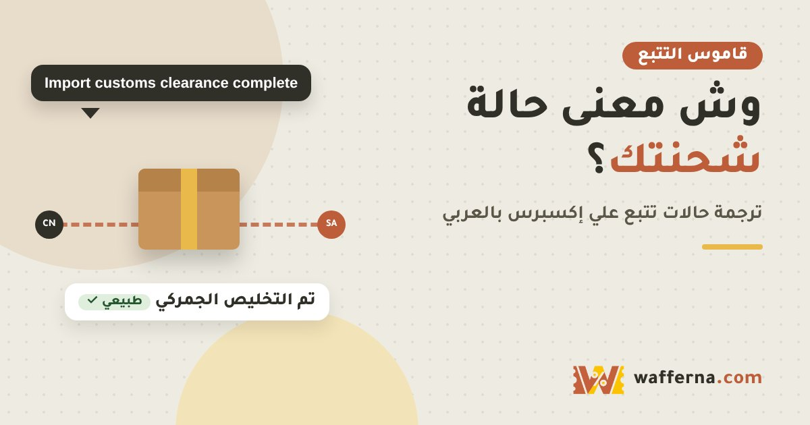

Awaiting payment
طبيعيبانتظار الدفع
الطلب لم يُدفع بعد، أو أن الدفع ما زال قيد التحقق من البنك.
ماذا أفعل؟ إذا دفعت وبقيت الحالة كما هي، راجع وسيلة الدفع ورسائل البنك، ولا تدفع مرة ثانية قبل أن تتأكد.
الرئيسية › نصائح › تتبع الشحنات
شحن
بعد عروض 11.11 تتحرك ملايين الطرود، وتظهر في التتبع رسائل بالإنجليزية مثل Handed over to linehaul أو Import customs clearance complete. اكتب الرسالة التي ظهرت لك في المربع تحت، أو كلمة منها، وستعرف معناها بالعربي، وهل هي طبيعية، وماذا تفعل.
28 حالة في القاموس. اكتب كلمة واحدة تكفي.
طبيعي لا تحتاج شيئاً انتظر وراقب قد تتأخر تحرّك تحتاج إجراء منك
بانتظار الدفع
الطلب لم يُدفع بعد، أو أن الدفع ما زال قيد التحقق من البنك.
ماذا أفعل؟ إذا دفعت وبقيت الحالة كما هي، راجع وسيلة الدفع ورسائل البنك، ولا تدفع مرة ثانية قبل أن تتأكد.
بانتظار الشحن
قد تظهر أيضاً: To shipProcessing
البائع يجهّز الطلب ولم يسلّمه لشركة الشحن بعد.
ماذا أفعل؟ قارن بمدة التجهيز المكتوبة في صفحة الطلب. إذا تجاوزها البائع، راسله من صفحة الطلب.
تم الشحن وبانتظار وصوله لك
قد تظهر أيضاً: Shipped
أكثر حالة تربك الناس: معناها أن البائع شحن الطلب وأنت تنتظر استلامه، وليس أن المندوب سيوصله اليوم.
ماذا أفعل؟ افتح «تتبع» داخل الطلب لترى أين وصلت الشحنة فعلياً.
الطلب مكتمل
قد تظهر أيضاً: Order completed
أُغلق الطلب كمكتمل، عادة بعد تأكيدك الاستلام أو انتهاء مدة الطلب.
ماذا أفعل؟ إذا تحوّل إلى مكتمل وأنت لم تستلم شيئاً، تواصل مع خدمة العملاء فوراً ومعك لقطات شاشة للتتبع.
الطلب مغلق أو ملغي
قد تظهر أيضاً: Order closedCancelled
أُلغي الطلب: إما بطلبك، أو من البائع، أو لعدم إتمام الدفع، أو بعد استرجاع المبلغ.
ماذا أفعل؟ تأكد من سبب الإغلاق في صفحة الطلب، وتابع وصول المبلغ المسترد إلى وسيلة دفعك.
بيانات الشحنة سُجّلت
قد تظهر أيضاً: Shipping information receivedPre-advice receivedElectronic information submitted by shipper
البائع أنشأ بوليصة الشحن إلكترونياً، لكن الطرد قد لا يكون وصل لشركة الشحن فعلياً حتى الآن.
ماذا أفعل؟ إذا بقيت هذه الحالة أياماً طويلة بدون أي حركة، راسل البائع واسأله هل سلّم الطرد فعلاً.
شركة الشحن استلمت الطرد
قد تظهر أيضاً: Package picked upReceived by logistics company
الطرد صار فعلياً عند شركة الشحن، وبدأت رحلته.
ماذا أفعل؟ لا شيء، فقط تابع.
في مركز الفرز
قد تظهر أيضاً: Sorting center processingOutbound in sorting centerLeft the sorting center
الطرد في مركز فرز داخل الصين، يُفرز ويُجمع مع طرود أخرى للسفر.
ماذا أفعل؟ لا شيء، هذه مرحلة سريعة عادة.
تخليص التصدير من الصين
قد تظهر أيضاً: Export clearance successArrived at departure transport hub
إجراءات خروج الطرد من الصين في المطار أو الميناء.
ماذا أفعل؟ لا شيء، فقط تابع.
سُلّم للنقل الدولي
قد تظهر أيضاً: Handed over to linehaulReceived by line-haulArrived at linehaul office
كلمة Linehaul تعني النقل الرئيسي بين الدولتين (غالباً طيران). كثيراً ما يتوقف التتبع هنا أياماً حتى يُحجز مكان على رحلة.
ماذا أفعل؟ التوقف هنا طبيعي. قلقك يبدأ فقط إذا اقترب تاريخ التسليم المتوقع بدون أي تحديث.
غادر الصين
قد تظهر أيضاً: Leaving from departure countryFlight departed
الطرد خرج من الصين وفي طريقه للسعودية. قد لا تظهر تحديثات حتى يصل.
ماذا أفعل؟ انتظر، فالتحديث التالي عادة عند الوصول.
وصل السعودية
قد تظهر أيضاً: Arrived in destination countryArrived at destination airport
الطرد وصل السعودية وينتظر دوره في التخليص الجمركي.
ماذا أفعل؟ لا شيء، المرحلة التالية الجمارك.
قيد التخليص الجمركي
قد تظهر أيضاً: Customs clearance in progressClearing customs
الطرد عند الجمارك للمراجعة. هنا قد تُحسب ضريبة القيمة المضافة والرسوم إذا لم تكن دُفعت وقت الشراء.
ماذا أفعل؟ انتظر، وتابع رسائل الجوال من شركة التوصيل. ولتعرف المبلغ المتوقع جرّب حاسبة الجمارك والضريبة.
تم التخليص الجمركي
قد تظهر أيضاً: Import clearance successReleased from customs
انتهت إجراءات الجمارك، والطرد في طريقه لشركة التوصيل المحلية.
ماذا أفعل؟ لا شيء، المرحلة التالية التوصيل.
متوقف عند الجمارك
قد تظهر أيضاً: Customs clearance delayedCustoms inspectionCustoms exception
الجمارك أوقفت الطرد للتفتيش أو لنقص بيانات أو لوجود رسوم غير مدفوعة.
ماذا أفعل؟ راجع رسائلك من شركة التوصيل، وأكمل المطلوب من موقعها الرسمي فقط. إذا طال التوقف، راسل البائع.
مطلوب دفع ضريبة أو رسوم
قد تظهر أيضاً: Taxes payableAwaiting payment of duties
الطرد لن يُسلّم حتى تُدفع الضريبة أو الرسوم المطلوبة.
ماذا أفعل؟ ادفع من تطبيق أو موقع شركة التوصيل الرسمي فقط. احذر الرسائل التي فيها روابط غريبة تطلب «رسوم جمارك»، فقد تكون احتيالاً.
انتقل لشركة التوصيل المحلية
قد تظهر أيضاً: Accepted by last mile carrierReceived by local delivery company
الطرد صار عند شركة التوصيل في السعودية (مثل البريد السعودي سبل أو أرامكس أو سمسا أو J&T أو ناقل أو iMile).
ماذا أفعل؟ قد يتغيّر رقم التتبع. ابحث في صفحة التتبع عن اسم الشركة ورقمها الجديد، وتابع من موقعها. شرحناها في دليل تتبع الشحنات.
في مستودع التوصيل
قد تظهر أيضاً: Arrived at delivery facilityIn transit to delivery facility
الطرد في مستودع شركة التوصيل في مدينتك أو قريباً منها.
ماذا أفعل؟ تأكد أن رقم جوالك وعنوانك الوطني صحيحان في الطلب.
مع المندوب اليوم
قد تظهر أيضاً: With delivery courier
الطرد خرج مع المندوب في طريقه لك.
ماذا أفعل؟ خلّ جوالك قريباً، فالمندوب قد يتصل قبل الوصول.
محاولة توصيل فاشلة
قد تظهر أيضاً: Delivery failedAddressee not availableUnable to deliver
المندوب حاول التوصيل ولم يتمكن، غالباً لعدم الرد أو صعوبة الوصول للعنوان.
ماذا أفعل؟ تواصل مع شركة التوصيل من تطبيقها أو موقعها الرسمي، وحدّد موعداً جديداً أو نقطة استلام.
مشكلة في العنوان
قد تظهر أيضاً: Incorrect addressAddress incomplete
العنوان ناقص أو غير واضح لشركة التوصيل.
ماذا أفعل؟ حدّث العنوان مع شركة التوصيل بسرعة، واستخدم رمز العنوان الوطني المختصر إن طُلب.
جاهز للاستلام من فرع
قد تظهر أيضاً: Arrived at pickup pointReady for collection
الطرد ينتظرك في فرع أو نقطة استلام بدلاً من توصيله للبيت.
ماذا أفعل؟ راجع رسالة الجوال لمعرفة المكان والمدة، واستلمه قبل أن يُعاد للبائع.
تم التسليم
قد تظهر أيضاً: SignedDelivery successful
سُجّلت الشحنة مسلَّمة.
ماذا أفعل؟ إذا لم تصلك، اتبع خطوات «ظهرت تم التسليم ولم تصلني» بسرعة، وقبل انتهاء حماية المشتري.
في الطريق
حالة عامة: الطرد بين محطتين. توقف التحديث عدة أيام شائع في الشحن الدولي.
ماذا أفعل؟ قارن دائماً بتاريخ التسليم المتوقع في صفحة الطلب، وليس بعدد الأيام بدون تحديث.
لا توجد معلومات تتبع
قد تظهر أيضاً: Tracking information not foundNot found
الرقم لم يُسجَّل بعد في نظام الشحن، وهذا شائع في الأيام الأولى بعد الشحن.
ماذا أفعل؟ انتظر بضعة أيام. إذا استمر الوضع، اطلب من البائع رقماً صحيحاً أو تأكيد الشحن.
حالة غير طبيعية
قد تظهر أيضاً: Package exceptionAbnormal
مشكلة عامة في الشحنة لم يُذكر سببها بالتفصيل.
ماذا أفعل؟ افتح تفاصيل التتبع لقراءة السبب، وراسل البائع واحتفظ بلقطات الشاشة.
في طريقه للعودة للبائع
قد تظهر أيضاً: Return to senderReturning to sender
الطرد يرجع للبائع، بسبب العنوان أو عدم الاستلام أو مشكلة جمركية.
ماذا أفعل؟ تواصل مع البائع فوراً، وافتح نزاعاً قبل انتهاء مدة حماية المشتري المكتوبة في صفحة الطلب.
الطرد مفقود
قد تظهر أيضاً: Package lost
شركة الشحن سجّلت الطرد مفقوداً.
ماذا أفعل؟ افتح نزاعاً واطلب استرجاع المبلغ، ومعك لقطة شاشة لهذه الحالة.
ما لقينا هذه الرسالة في القاموس. جرّب كلمة واحدة منها فقط (مثل customs أو delivery)، أو ارجع لـدليل تتبع الشحنات.
معناها أن البائع شحن الطلب وأنت تنتظر استلامه. لا تعني أن المندوب سيوصله اليوم. افتح «تتبع» داخل الطلب لترى أين وصلت الشحنة.
معناها أن الطرد انتهى من التخليص الجمركي في السعودية، وسينتقل لشركة التوصيل المحلية. هذه حالة جيدة ولا تحتاج منك شيئاً.
Linehaul هو النقل الدولي الرئيسي بين الصين والسعودية، وغالباً يكون طيراناً. توقف التتبع عدة أيام بعد هذه الحالة شائع، وقلقك يبدأ فقط إذا اقترب تاريخ التسليم المتوقع بدون تحديث.
في الشحن الدولي تمر الشحنة بمراحل لا تُسجَّل فيها مسحات، مثل الانتظار للطيران أو الجمارك. قارن بتاريخ التسليم المتوقع في صفحة الطلب، وإذا تجاوزه راسل البائع وافتح نزاعاً قبل انتهاء حماية المشتري.
ادفع فقط من تطبيق أو موقع شركة التوصيل الرسمي بعد أن تتأكد من رقم الشحنة. لا تضغط روابط مجهولة في الرسائل، فرسائل «رسوم الجمارك» الوهمية أسلوب احتيال شائع.